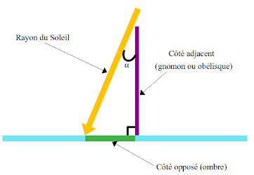

Rubrique scientifique
Et si vous étiez capable de calculer le tour de notre Planète...

Alors que la reconnaissance de la sphéricité de notre planète ne se fera qu’au XVIème siècle après J.C., sous l’impulsion de grands scientifiques comme Copernic puis Galilée, un homme, presque vingt siècles auparavant s’est déjà forgé la conviction que sa planète, la Terre, est ronde, voire parfaitement sphérique. Ainsi, il décide de relever le défi de calculer la circonférence de sa planète, aux seuls moyens de son observation du ciel et de son intelligence de génie. Nous sommes alors au IIIème avant J.C., un homme va révolutionner l'astronomie.
Cet homme n’est autre qu’Eratosthène (-276 -194), fondateur du concept de la “géographie”, et célèbre astronome de l’époque antique. Inspiré par les précédents travaux d’Aristote, cette conviction selon laquelle la Terre serait ronde grandit en lui depuis ses multiples observations de la Lune. En effet, le scientifique de Cyrène ne cesse de scruter ce fameux croissant qui rétrécit, disparaît puis réagrandit éternellement. Il reste sans comprendre jusqu’à se demander s’il ne s’agit pas d’un autre astre dans l’espace qui lui ferait de l’ombre. Ainsi Eratosthène en est persuadé, c’est la Terre la seule responsable, et si l’ombre est ronde, c’est pour une raison simple, la Terre, sa planète, l’est aussi. Convaincu, il veut, à présent, tenter de calculer sa circonférence. Étant donné qu’à son époque, il n’existe aucun instrument de mesure capable de mesurer une distance aussi grande que le tour de notre Planète. Il élabore donc une stratégie mathématique bien précise, afin de réaliser son projet ambitieux.
Eratosthène commence par choisir deux points géographiques. Ces derniers correspondent à deux villes égyptiennes : Alexandrie (point bleu) et Syène (point vert), l’actuelle Assouan, deux villes qui doivent être situées sur le même méridien, pour que la suite de la stratégie du scientifique fonctionne. En effet, le Soleil les éclaire, ainsi, au même instant chaque jour. La suite de son raisonnement consiste à calculer, quelle proportion de la circonférence de la Terre, la distance qui sépare ces deux villes représente ; puis à mesurer celle-ci.
Tout d’abord, il remarque qu’au solstice d’été, à Syène, le Soleil illumine directement le fond d’un puits, les rayons du Soleil éclairent donc parfaitement à la verticale.
En revanche, au même instant, à Alexandrie, un gnomon* (trait mauve) ou une obélisque (controverse sur cette information, il s’agit quoiqu’il en soit d’un petit ou d’un grand “bâton”, dont l’astronome connaissait la taille) forme une ombre (trait vert). Ainsi Ératosthène réussit à déduire, grâce à la trigonométrie, un angle (angle noir) de 7,2°, en fonction de la direction d’arrivée des rayons du Soleil et de la hauteur du gnomon*.
En effet, il connaît la hauteur du gnomon et la longueur de l’ombre formée par celui-ci. Le gnomon étant planté dans le sol d’Alexandrie à la verticale, il peut donc tracer un triangle rectangle dont l'hypoténuse est formée par le rayon de Soleil.
 Eratosthène cherche ici l’angle α, dont on connaît le côté opposé (ombre) et adjacent (gnomon). Il doit donc utiliser la tangente, qui nous dit que tan (α) = côté opposé / côté adjacent.
Pour trouver α, le scientifique a donc calculé : arctan (côté opposé / côté adjacent), et il a, ainsi, trouvé un angle d’une mesure de 7,2°.
Par ailleurs, les rayons en provenance du Soleil étant perpendiculaires à Syène, leur prolongement suit un rayon de la Terre (trait bleu clair). De plus, les rayons du Soleil ayant tous la même direction (les rayons du Soleil ne sont pas exactement parallèles entre eux, cependant la Terre est si petite par rapport à l’immensité du Soleil, que ce détail est négligeable), le rayon de la Terre (trait bleu clair) reliant le centre de la Terre à Syène est parallèle au rayon du Soleil qui éclaire Alexandrie.
D’après la loi des angles alternes–internes, l’astronome de Cyrène déduit donc que l’angle vert et l’angle noir sont égaux puisque le trait bleu clair est parallèle avec le rayon du Soleil pointé sur Alexandrie.
Enfin, 7,2°/360° = 1/50, l’angle de 7,2° représente donc 1/50 d’un angle de 360° (un tour complet). La distance Alexandrie – Syène représente donc 1/50 de la circonférence de la Terre.
A présent, il doit établir la distance qui séparent les deux villes, Alexandrie et Syène.
Il existe diverses explications sur les méthodes du scientifique pour mesurer cette distance (trait rouge). Une légende assez répandue dit, notamment, que l’astronome aurait compté les pas d’un chameau, un animal réputé pour son pas très régulier, sur l’ensemble du trajet reliant les deux villes. Cependant, cette distance avoisinant les 800 km, cela paraît peu crédible. Ainsi il se serait plutôt servi des caravanes de marchands qui effectuaient ce voyage d’une durée de 50 jours. Ces derniers parcourant environ 100 stades égyptiens par jour, Ératosthène estime que la distance qui sépare ces deux villes est de 50 x 100, soit 5000 stades.
L’ingénieux astronome n’a donc plus qu’à multiplier 5000 stades par 50, ce qui lui permet d’affirmer que la circonférence de la Terre est de 250000 stades égyptiens, ce qui équivaut à quelques centaines de kilomètres près à 40000 km. Pour son époque, il s’agit donc d’une réelle prouesse scientifique. En revanche, il faut tout de même ajouter, qu’ Eratosthène a eu un peu de chance.
En effet, le raisonnement d’Eratosthène est basé sur trois hypothèses, plus ou moins négligeables.
- la Terre est parfaitement sphérique
- Alexandrie et Syène sont situées sur le même méridien
- les rayons du Soleil arrivent parfaitement parallèles à la surface de notre planète
Ainsi, on remarque que mis à part, la troisième conjecture, fausse à un détail franchement négligeable, les deux autres sont presque des aberrations qui par chance se sont compensées avec d’autres de ses erreurs.
Tout d’abord, la Terre n’est pas une sphère parfaite, elle est “aplatie” au niveau des pôles, dû à la force centrifuge qu’elle exerce sur elle-même lors de sa rotation. C’est pourquoi, la circonférence de la Terre au niveau de l’équateur est environ 70 km plus longue que celle passant par les pôles, celle qu’a calculée Eratosthène. En revanche, celui-ci ayant surestimé la distance qui séparait ses deux repères géographiques, ses erreurs se sont compensées, de même, que ces mêmes repères ne se situaient pas sur le même méridien.
Il se trouve qu’en réalité les coordonnées des deux villes sont les suivantes : Alexandrie (latitude : 31° 12’ 56”; longitude : 29° 57’ 18”), Syène (latitude : 24° 05’ 26”; longitude : 32° 53’ 57”). Autrement dit, il y a une différence de 3° de longitude, les deux villes ne se situent donc pas exactement sur le même méridien, le Soleil ne les éclaire pas exactement au même moment.
En somme, le succès scientifique que l’on doit attribuer à Eratosthène de Cyrène pour son raisonnement ne doit pas être modéré mais il doit être relativisé pour les quelques aberrations scientifiques qu’il a faites, mais qu’il ne pouvait en aucun cas vérifier à son époque.
Mais vous, honnêtement, sans même parler du résultat de l’astronome, vous y seriez parvenu…??!!